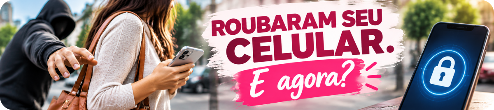

O celular deixou de ser apenas um telefone. Nele estão conversas, fotos, e-mails, redes sociais, aplicativos bancários e muitas outras informações pessoais.
Por isso, quando o aparelho é roubado ou furtado, o problema não é apenas perder o celular. É preciso agir rapidamente para proteger a linha, o dinheiro, as contas e os dados.
Se isso acontecer, tente manter a calma e comece pelas providências mais importantes.
1. Use o Celular Seguro
O Celular Seguro, do Ministério da Justiça e Segurança Pública, permite emitir um alerta em caso de roubo, furto ou perda. O sistema comunica operadoras, bancos e outras instituições participantes para que adotem os procedimentos de bloqueio correspondentes.
Atualmente, na emissão do alerta, é possível escolher entre Modo Recuperação e Bloqueio Total.
No Modo Recuperação, o IMEI não é bloqueado. Já no Bloqueio Total, o IMEI é bloqueado, impedindo novas habilitações do aparelho nas redes móveis.
Atenção: a escolha entre Modo Recuperação e Bloqueio Total deve ser feita com cuidado. Depois que o alerta é emitido, o tipo escolhido não pode ser alterado.
Mesmo quem não possuía cadastro antes da ocorrência pode fazer o cadastro no Celular Seguro após o roubo, furto ou extravio e emitir o alerta.
2. Proteja suas contas bancárias e digitais
Entre em contato com seus bancos pelos canais oficiais e informe o ocorrido. Solicite o bloqueio do acesso daquele aparelho aos aplicativos e verifique se houve movimentações que você não reconhece.
Também é importante alterar senhas de aplicativos bancários e cartões. Se havia biometria habilitada para acesso ao banco, solicite à instituição a revogação desse acesso no aparelho roubado.
Depois, cuide das demais contas importantes: e-mail principal, WhatsApp, redes sociais, Conta Google ou Conta Apple e outros serviços que possam conter dados pessoais ou permitir recuperação de senhas.
3. Bloqueie a linha telefônica
Entre em contato com sua operadora e solicite o bloqueio da linha. Isso impede que o chip seja utilizado em outro aparelho para gerar custos ou facilitar tentativas de acesso a serviços vinculados ao seu número.
A Anatel orienta que, em caso de roubo, furto ou extravio, o consumidor comunique a prestadora e solicite o bloqueio. O procedimento também pode ser iniciado pelo Celular Seguro, conforme a modalidade escolhida e as instituições participantes.
Levaram meu celular. Por onde começo?
Guarde esta sequência:
4. Tente localizar e proteger o aparelho remotamente
Os sistemas Android e iPhone possuem recursos próprios que podem ajudar a localizar, bloquear ou apagar o aparelho remotamente.
No Android, o Localizador do Google permite localizar o dispositivo, marcá-lo como perdido e, se necessário, apagar os dados remotamente, desde que as condições exigidas pelo serviço estejam atendidas.
No iPhone, o recurso Buscar permite marcar o aparelho como perdido. Isso bloqueia o dispositivo com o código configurado e ajuda a proteger a Conta Apple e as informações pessoais.
Se o aparelho aparecer em um local desconhecido, não tente recuperá-lo por conta própria. Procure as autoridades policiais.
5. Antes de apagar tudo, entenda uma diferença importante
Apagar os dados remotamente pode ser necessário quando não há perspectiva de recuperação do aparelho, mas esse procedimento tem efeitos diferentes conforme o sistema.
No Android, depois que os dados são apagados pelo Localizador, a localização do aparelho deixa de ficar disponível naquele serviço.
No iPhone, a Apple orienta que o aparelho roubado não seja removido do recurso Buscar, mesmo depois de um apagamento remoto, porque a remoção desativa o Bloqueio de Ativação e pode facilitar a reutilização ou revenda do dispositivo.
6. Registre o Boletim de Ocorrência
O alerta no Celular Seguro não substitui o Boletim de Ocorrência.
Registre o B.O. presencialmente em uma unidade da Polícia Civil ou pela delegacia virtual do seu estado, quando o serviço estiver disponível para a ocorrência.
Informe corretamente as circunstâncias, data, horário e local do fato e forneça os dados disponíveis sobre o aparelho. Se já tiver ocorrido movimentação financeira ou acesso indevido a alguma conta, inclua essas informações e preserve os respectivos registros.
7. Cuidado com golpes depois do roubo
Depois de um roubo, podem surgir mensagens dizendo que o aparelho foi localizado ou pedindo senha, código de verificação ou acesso a algum link.
Não forneça códigos, senhas ou dados de acesso. A Apple, por exemplo, alerta expressamente que não entra em contato para informar que um iPhone roubado foi encontrado.
Desconfie também de falsos atendentes de banco, operadora ou suporte técnico. Sempre procure os canais oficiais por conta própria.
8. Continue acompanhando suas contas
Nos dias seguintes, acompanhe extratos bancários, alertas de movimentação e atividades das suas principais contas.
O Ministério da Justiça também recomenda o acompanhamento periódico do Registrato, do Banco Central, onde é possível consultar informações financeiras vinculadas ao CPF.
Dica da Lu: não espere perder o celular para descobrir suas opções de proteção. Conheça previamente o Celular Seguro e os recursos de localização do seu aparelho.
Checklist da Lu
☑ Alerta emitido no Celular Seguro, quando utilizado
☑ Linha telefônica protegida
☑ Bancos e contas importantes protegidos
☑ Aparelho marcado como perdido ou bloqueado remotamente, quando possível
☑ B.O. registrado
☑ Contas e movimentações acompanhadas
Para terminar...
Roubo ou furto de celular exige rapidez, mas não improviso. Comece protegendo aquilo que pode causar os maiores prejuízos: o aparelho, a linha, o dinheiro e suas contas.
E há uma providência que pode ser tomada antes de qualquer problema: conhecer as ferramentas de proteção e deixar o aparelho preparado para ser localizado ou bloqueado.
Agir rápido pode reduzir os riscos. Estar preparado pode fazer ainda mais diferença.
Fontes consultadas
Ministério da Justiça e Segurança Pública — Celular Seguro: emitir alerta — Modo Recuperação, Bloqueio Total e registro do B.O.
Ministério da Justiça e Segurança Pública — Levaram meu celular — bloqueios, bancos, senhas, B.O. e acompanhamento.
Anatel — Celular roubado — bloqueio da linha e do aparelho.
Google — Encontrar, proteger ou limpar um dispositivo Android perdido — Localizador, marcação como perdido e apagamento remoto.
Apple — Se o iPhone ou iPad tiver sido roubado — Modo Perdido, Buscar, Bloqueio de Ativação e apagamento remoto.